Un sistema automático de control es un conjunto de componentes que trabajan coordinadamente para que una magnitud física (temperatura, velocidad, nivel, presión…) alcance y mantenga un valor deseado, sin intervención humana continua.
La salida no influye en el funcionamiento del sistema: no hay rama de realimentación y la actuación se calcula solo a partir de la consigna.
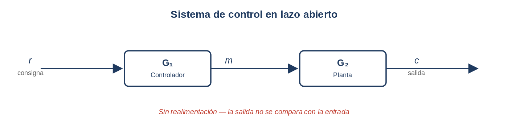
La salida influye en el funcionamiento del sistema: el valor real de c se mide y se compara con la consigna r, y la diferencia (el error e) se usa para corregir la actuación.
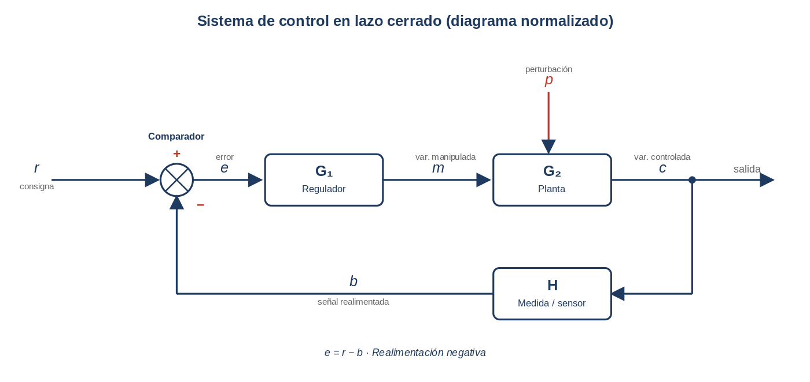
| Lazo abierto | Lazo cerrado | |
|---|---|---|
| Sensor (H) | No | Sí |
| Comparador | No | Sí |
| Realimentación (b) | No | Sí |
| Corrección de error | No | Sí |
| Sensibilidad a perturbaciones (p) | Alta | Baja |
| Precisión | Baja | Alta |
| Complejidad / coste | Bajo | Mayor |
El error es la diferencia entre la consigna r y la señal realimentada b (medida de la salida c a través de H):
En el caso particular de realimentación unitaria (\(H = 1\)) se tiene \(b = c\) y la fórmula se simplifica:
Interpretación:
El objetivo de un sistema de control es minimizar el error. Los reguladores actúan precisamente sobre él: la acción proporcional reduce el error instantáneo, la integral ayuda a eliminar el error permanente y la derivativa anticipa cambios y reduce oscilaciones.
En la bibliografía existen dos convenciones habituales para dibujar el mismo lazo de control:
Ambas son equivalentes y describen el mismo sistema. Usa la forma A para identificar elementos reales y la forma B para hacer cálculos.
G₁ (rama directa) = Transductor · Regulador · ActuadorG₂ (planta) = Planta o procesoH (realimentación) = Captador (sensor + acondicionamiento)m (variable manipulada) = acción del Regulador+Actuador sobre la PlantaRepresentación gráfica del flujo de señales en un sistema de control. Elementos básicos:
Indica cómo responde el sistema ante una señal de entrada en régimen permanente.
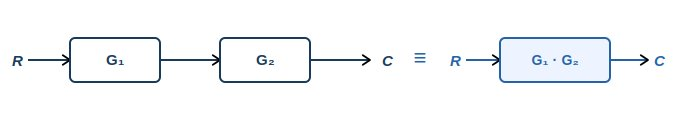
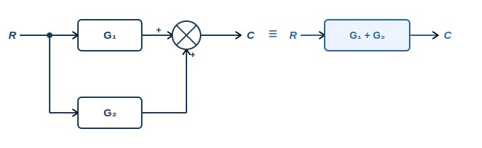
Si alguna rama llega con signo −, su función se resta.
Demostración: \(S = G \cdot e\), \(e = R - H \cdot S\) → \(S = G(R - H \cdot S)\) → \(S(1 + GH) = GR\) → \(G_{eq} = S/R = \dfrac{G}{1 + GH}\)
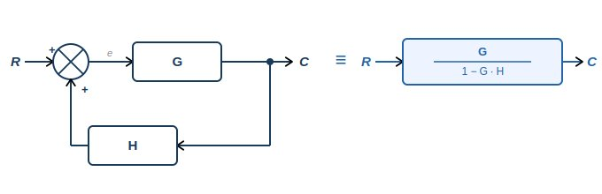
⚠ Tiende a aumentar el error. Si G·H = 1 → denominador = 0 → sistema inestable.
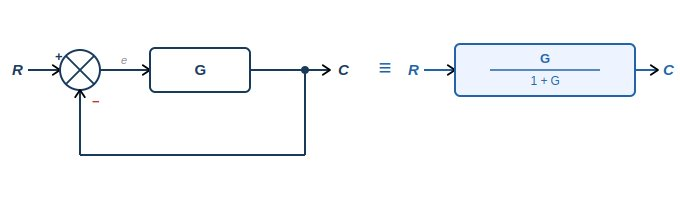
Caso particular de R3 con H = 1. Es el caso más habitual en la práctica.
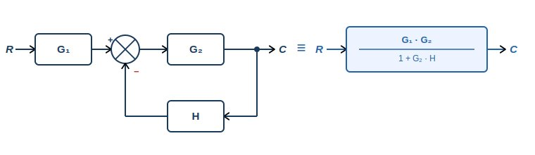
\(G_1\) solo escala la señal de referencia antes del comparador, nunca aparece dentro del lazo.
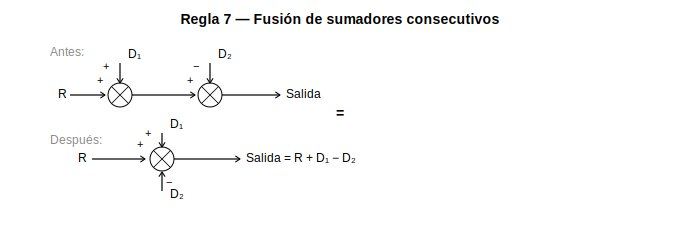
Aparece en diagramas con perturbaciones que entran en distintos puntos del sistema.
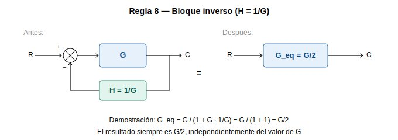
Si \(H = 1/G\) → \(G \cdot H = 1\) → denominador \(= 2\) siempre. Ejemplo: \(G = 10\), \(H = 0{,}1\) → \(G_{eq} = 5\).
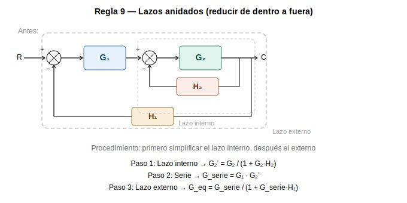
Cada lazo aporta un término al denominador de la función de transferencia final.
Para simplificar cualquier diagrama de bloques se aplica el siguiente procedimiento ordenado:
En un sistema con realimentación negativa, el error se define como la diferencia entre la referencia y la señal realimentada:
Si se conoce la función de transferencia equivalente \(G_{eq}\), la salida vale \(c = G_{eq}\cdot r\). Combinando ambas expresiones se calcula el error para cualquier entrada \(r\).
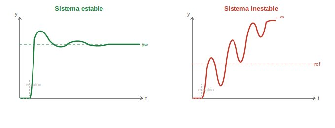
La salida oscila inicialmente pero se amortigua y tiende a un valor constante (equilibrio). Ejemplo: termostato que alcanza y mantiene la temperatura deseada.
Las oscilaciones crecen con el tiempo. El sistema no alcanza equilibrio. Ejemplo: control mal ajustado con vibraciones cada vez mayores.
Un sistema de control de temperatura tiene realimentación negativa con \(G = 5\) y \(H = 0{,}5\). ¿Es estable el sistema? Justifica la respuesta.
El regulador o controlador es el "cerebro" del lazo de control. Procesa la señal de error y genera la acción de control m(t) (variable manipulada) que envía al actuador. Según cómo procesa el error, distinguimos seis tipos de acción.
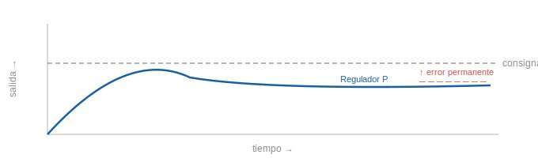
Ventaja: rápido y sencillo. Limitación: deja error en régimen permanente (offset).
Quieres mantener la habitación a 22 °C. Consigna: 22 °C. Temperatura actual: 18 °C.
\(e = 22 - 18 = 4\) °C. Con \(K_p = 25\%\) de potencia por cada grado → \(m = 25 \times 4 = 100\%\). La calefacción se pone a tope.
La habitación se calienta: \(T = 21\) °C, \(e = 1\) °C → \(m = 25\%\). La calefacción baja. Cuando llega a 22 °C: \(e = 0\), \(m = 0\).
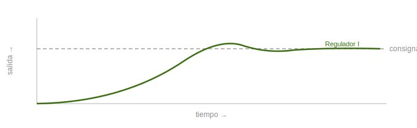
Ventaja: elimina el error permanente. Limitación: respuesta lenta, puede provocar sobreoscilaciones.
Consigna: 22 °C. \(T_{\text{actual}} = 20\) °C, \(e = 2\) °C. El regulador integral empieza a acumular el error y actuar.
Pasa el tiempo: \(T = 21{,}5\) °C, \(e = 0{,}5\) °C. El integral sigue actuando porque el error aún existe.
\(T = 21{,}8\) °C, \(e = 0{,}2\) °C. El regulador todavía empuja. Finalmente: \(T = 22\) °C, \(e = 0\). El integral deja de crecer, pero el valor acumulado mantiene la calefacción justo donde hace falta.
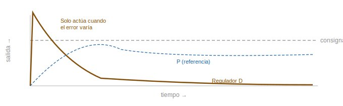
Ventaja: anticipa cambios y amortigua oscilaciones. Limitación: no actúa si el error es constante, amplifica ruido.
Consigna: 22 °C. \(T_{\text{actual}} = 18\) °C, error grande. El sistema calienta fuerte.
La temperatura sube muy rápido: 20 °C → 21 °C. El regulador derivativo detecta: te acercas demasiado rápido. Reduce la potencia antes de llegar → frena el calentamiento → no se pasa de 22 °C.
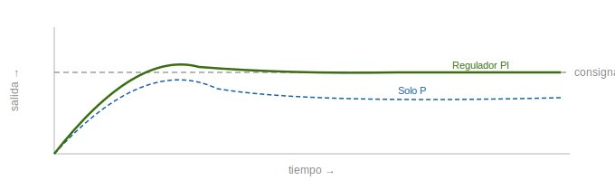
Combina rapidez (P) + eliminación del offset (I). Es el regulador más usado cuando no hay cambios bruscos.
Consigna: 22 °C. \(T_{\text{actual}} = 18\) °C, \(e = 4\) °C.
Parte P actúa primero con fuerza: error grande → calefacción fuerte → temperatura sube rápido.
\(T = 21\) °C, \(e = 1\) °C: P reduce la potencia. Pero aún hay error. La parte I lleva tiempo acumulando ese error y sigue empujando. Añade más potencia lentamente. No para hasta que el error sea cero.
\(T\) sigue subiendo: \(21{,}5 \to 21{,}8 \to 21{,}9\) °C. Hasta que: \(22\) °C, \(e = 0\). El integral se congela con su valor acumulado y mantiene la calefacción estable.
P arranca rápido · I termina el trabajo · juntos: rápido y sin error permanente.
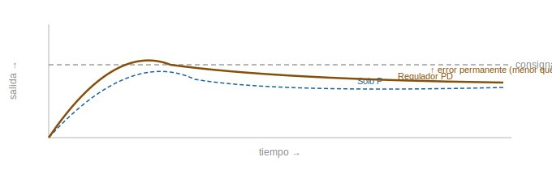
Combina rapidez (P) + anticipación (D). No elimina el error permanente.
Consigna: 22 °C. T actual = 18 °C, e = 4 °C.
Parte P actúa con fuerza: calefacción fuerte, temperatura sube rápido. A 20 °C sube rápido, a 21 °C sube muy rápido.
Parte D detecta: te acercas demasiado rápido. Reduce la potencia antes de llegar → frena el calentamiento.
La temperatura llega suave: 21,8 → 21,9 °C. Se estabiliza cerca de 22 °C, pero no llega exacto. Para eso haría falta el integrador.
P arranca rápido · D frena antes de pasarse · juntos: rápido y sin oscilaciones · no elimina el error permanente.
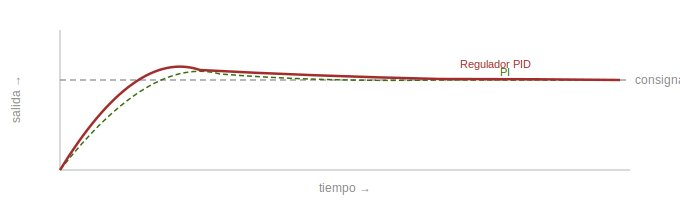
| Regulador | Fórmula | Ventaja | Limitación |
|---|---|---|---|
| P | \(K_p \cdot e\) | Rápido, sencillo | Error permanente (offset) |
| I | \(K_i \displaystyle\int e\,dt\) | Elimina offset | Lento, sobreoscilaciones |
| D | \(K_d \cdot de/dt\) | Anticipa, amortigua | No actúa si error constante |
| PI | P + I | Rápido + sin offset | Puede oscilar |
| PD | P + D | Rápido + anticipa | No elimina offset |
| PID | P + I + D | El más completo | Ajuste complejo |
Consigna: 22 °C. T actual = 18 °C, e = 4 °C.
Al principio domina el P: calefacción fuerte, sube rápido.
A medida que se acerca, el D cobra protagonismo: detecta que se acerca muy rápido → reduce potencia → evita que se pase.
T = 21,8 → 21,9 °C (llega suave). Con el error ya pequeño, el I hace el trabajo fino: detecta el pequeño error residual → añade potencia poco a poco → no para hasta llegar a cero.
Resultado: T = 22 °C exactos. Sistema estable.
P arranca · D frena · I ajusta hasta cero · el mejor de los tres mundos.
| Necesito llegar exacto | El sistema oscila | Regulador recomendado |
|---|---|---|
| No | No | P — cuando la precisión absoluta no es crítica. Ej: velocidad de un ventilador, brillo de una lámpara. |
| Sí | No | PI — el más común en la industria. Ej: presión en tuberías, velocidad de motores industriales, caudal de líquidos. |
| No | Sí | PD — cuando importa no pasarse. Ej: estabilizador de cámara, posicionamiento rápido de cabezal. |
| Sí | Sí | PID — el estándar industrial. Ej: horno industrial, dron en vuelo, control de inyección de combustible, robot industrial. |
Un sensor detecta una magnitud física. Un transductor la convierte en otra (normalmente eléctrica) para que el sistema de control pueda procesarla.
| Sensor | Principio | Aplicación |
|---|---|---|
| Potenciómetro | Resistencia variable con posición angular/lineal | Mandos, articulaciones robóticas |
| Encoder óptico | Disco con ranuras + fotodetector → pulsos | Motores, CNC, robótica |
| LVDT | Transformador diferencial de núcleo móvil | Desplazamientos lineales de precisión |
| Inductivo | Detecta metales por campo electromagnético | Detección de piezas metálicas |
| Capacitivo | Detecta cualquier material por variación de capacidad | Nivel de líquidos, plásticos |
| Óptico / fotoeléctrico | Emisor-receptor de luz infrarroja | Conteo, presencia, barreras |
| Ultrasónico | Tiempo de vuelo de onda sonora | Distancia, nivel de líquidos |
| Sensor | Principio | Aplicación |
|---|---|---|
| Tacómetro / dinamo tacométrica | Genera tensión proporcional a velocidad angular | Motores eléctricos |
| Encoder incremental | Cuenta pulsos por revolución → frecuencia ∝ velocidad | Ejes, cintas transportadoras |
| Sensor | Principio | Aplicación |
|---|---|---|
| Termopar | Dos metales distintos → tensión proporcional a T | Hornos, procesos industriales |
| NTC (termistor) | Resistencia disminuye al aumentar T | Electrónica, climatización |
| PTC (termistor) | Resistencia aumenta al aumentar T | Protección de motores |
| Pt100 / RTD | Resistencia de platino proporcional a T | Medidas de alta precisión |
| Sensor | Principio | Aplicación |
|---|---|---|
| Piezorresistivo / membrana | Deformación → variación de resistencia | Hidráulica, neumática |
| LDR | Resistencia disminuye con la luz | Iluminación automática |
| Fotodiodo / fototransistor | Genera corriente al recibir luz | Comunicaciones ópticas, seguridad |
| Sensor capacitivo de humedad | Capacidad varía con humedad relativa | Agricultura, climatización |
| Sensor PIR | Detecta radiación infrarroja de cuerpos calientes | Alarmas, iluminación automática |
| Galga extensiométrica | Deformación mecánica → variación de resistencia | Células de carga, ensayos de materiales |
| Sensor piezoeléctrico | Presión/fuerza dinámica → tensión eléctrica | Vibraciones, impactos |
Un actuador es el elemento del sistema de control encargado de transformar la señal de control procedente del regulador en una acción física sobre el sistema. Actúa directamente sobre la planta modificando el valor de la variable controlada.
Ejemplos rápidos:
Transforman la energía eléctrica en movimiento mecánico de rotación. Son uno de los actuadores más utilizados en sistemas de control. La velocidad o el par del motor pueden regularse mediante la señal de control \(m(t)\) procedente del regulador.
Tipos principales:
Transforman la energía de un fluido a presión en movimiento mecánico lineal.
El movimiento del cilindro se controla mediante válvulas que regulan el paso del fluido.
Transforman la energía eléctrica en energía térmica mediante el efecto Joule. La potencia térmica generada depende de la señal de control aplicada, lo que permite regular la temperatura del sistema.
Aplicaciones: calefacción, hornos eléctricos, termos, secadoras, climatización industrial.
Regulan el paso de fluidos en sistemas neumáticos, hidráulicos o térmicos. La apertura puede controlarse mediante señales eléctricas, neumáticas o hidráulicas.
Variando la apertura se controla el caudal, la presión, el nivel o la temperatura del sistema.
| Tipo | Energía | Ejemplos | Aplicación |
|---|---|---|---|
| Motores eléctricos | Eléctrica → mecánica | Motor CC, motor CA, servomotor, motor paso a paso | Robótica, CNC, ascensores, cintas |
| Cilindros neumáticos | Aire comprimido → movimiento lineal | Simple efecto, doble efecto | Manipulación, embalaje, automatización |
| Cilindros hidráulicos | Fluido a presión → movimiento lineal | Simple efecto, doble efecto | Maquinaria pesada, prensas, excavadoras |
| Resistencias calefactoras | Eléctrica → calor | Resistencias de hilo, cerámicas | Hornos, climatización, secado |
| Válvulas de control | Regulan caudal/presión | Válvulas proporcionales, servo-válvulas | Procesos químicos, calefacción |
| Electroválvulas | Eléctrica → apertura/cierre de fluidos | Solenoides on/off | Control todo/nada de fluidos |
| Relé / contactor | Eléctrica → conmutación de circuitos | Relé electromecánico, contactor | Encendido/apagado de cargas |
| Bombas | Eléctrica → movimiento de fluidos | Bombas centrífugas, de engranajes | Circuitos hidráulicos, agua |
Identificación de actuadores según la aplicación. Indique qué actuador utilizaría en cada caso y justifique brevemente la respuesta:
5 preguntas tipo PAU. Pulsa la opción que consideres correcta y se mostrará la respuesta.
1. En un sistema en lazo cerrado, el sensor:
2. La acción Proporcional (P):
3. La acción Integral (I):
4. Para un sistema con G en serie con realimentación negativa H, la transferencia es:
5. La realimentación negativa estabiliza el sistema porque: